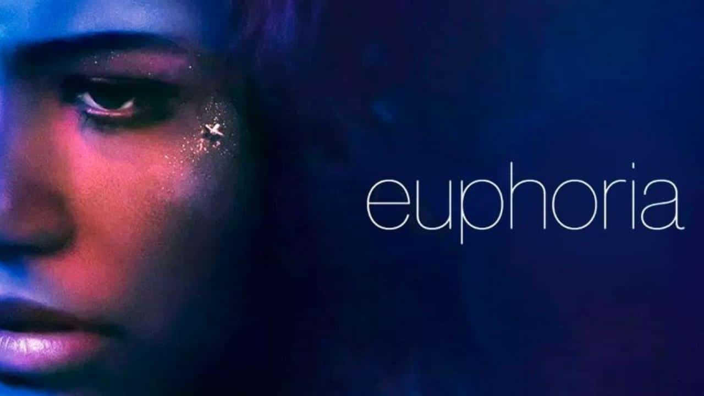
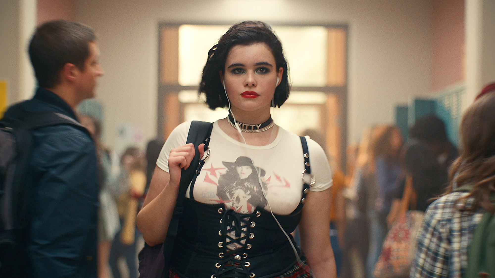
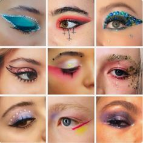
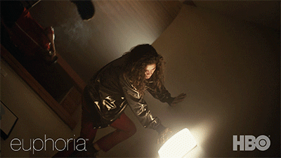
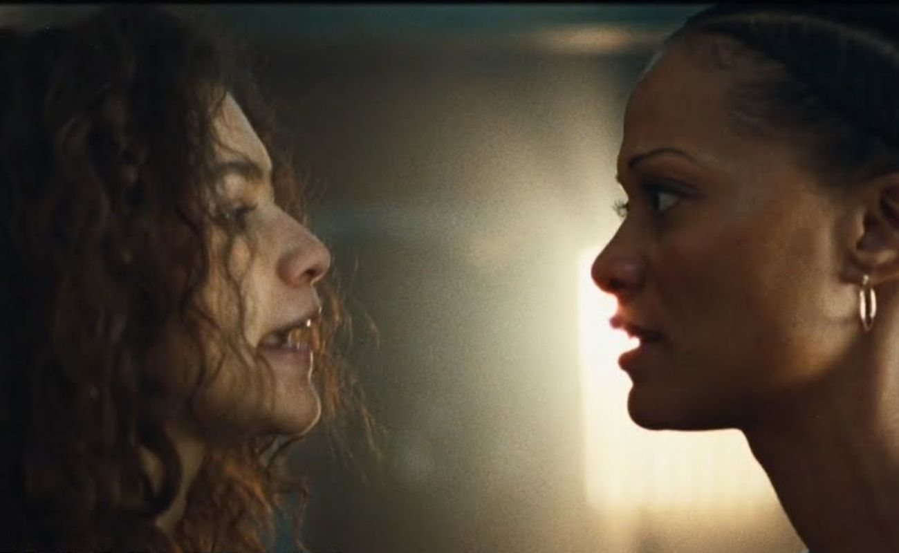

Euphoria
A série Euphoria (2019), produção HBO Max, conquistou os jovens de maneira intensa a ponto de muitos se identificarem com as vivências dos personagens, seus medos, angústias, alegrias e turbilhão de emoções pelas quais se passam na adolescência. Na série são abordados assuntos como drogas na adolescência, relações tóxicas, problemas familiares, ansiedade e depressão.
Experiência Pessoal
O diretor da série Sam Levinson destacou que em vários momentos da série foram utilizadas expeirncias pessoais como na personagem Rue (Zendaya) viciada em drogas e com ansiedade e depressão.
Personagem Brasileira
Barbie Ferreira, que interpreta Kat, possui mãe e avó mineiras. A atriz inclusive fala além de inglês o português com um sotaque bem característico.
Maquiagem de Euphoria
Uma coisa pela qual a série se destaca muito é as maquiagens, e isso todos podemos combinar. Mas muito além de apenas glitter e cores lindas, essas maquiagens, segundo a própria maquiadora Doniella Davy, representam as transformações das personagens ao longo dos episódios, mostrando que os joevns estão evoluindo e assim amadurencendo ao decorrer da série.
Cenário Giratório
Na 1° temporada, uma das cenas aparece o cenário rodando, dando a ideia de que a cabeça da persoangem estava girando/delirando. De fato, não foram efeitos especiais, foi montado todo um sistema para que o cenário girase em si e a persoangem Rue (Zendaya) ficasse amarrda por cordas no centro para assim seguir o fluxo giratório da cena.
Cenas Marcantes
No seriado, há diversas cenas maracntes que nos tocam, com trilhas sonoras e fotografia impecáveis. Euphoria é uma série muito intensa, que conta a realidade qu emuitos jovens estadunidenses passam, por isso algumas cenas podem chocar algumas pesssoas.
A mãe de Rue, acaba por descobrir que a menina utiliza novamente de diversos psicoativos, por um tempo ela ja tinha parado, mas agora voltou com intensidade. Com as emoções à flor da pele, mãe e filha acabam discutindo sobre essa situação, dizendo coisas que magoam ambas, fragilizando e distanciando ainda mais essa relação. As próprias atrizes comentam que na verdade, essa cena foi improvisada e que no meio da produção, Rue (Zendaya) chega até a se machucar quando cai no chão.
Rue sofre de vício em drogas, por conta de diversos problemas tanto emocionais como familiares. Nessa de comprar drogas, seu vendedor e amigo acaba se solidarizando com a garota que ainda é menor de idade, e tnta de alguma forma barrar que ela cave mais a sua própria cova parando de vender pra ela. Cosnequentemente, Rue entra em abstinência e busca novamente esse seu amigo que a vendia, mas dessa vez em um estado muito mais caótico e perturbado, dizendo coisas que normalmente não diria para alguém que importa para si.